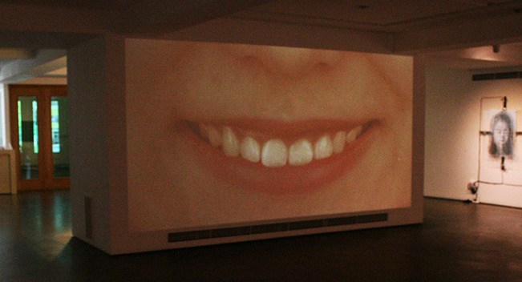

2014 July, Performance Single-Channel Video

Cheeeeese is a single-channel video performance. It is a close-up of a female performer’s mouth. The performer smiles for a long time showing discomfort and convulsions. The uncomfortable pains get severe toward the end of the video. Cheeeeese conveys society’s pressure of being polite and being nice to others; however, the manner is socially forced, not naturally performed.
Funding: OCI Museum
Exhibition
2014 June - July, "You are Happy", Seoul,Korea